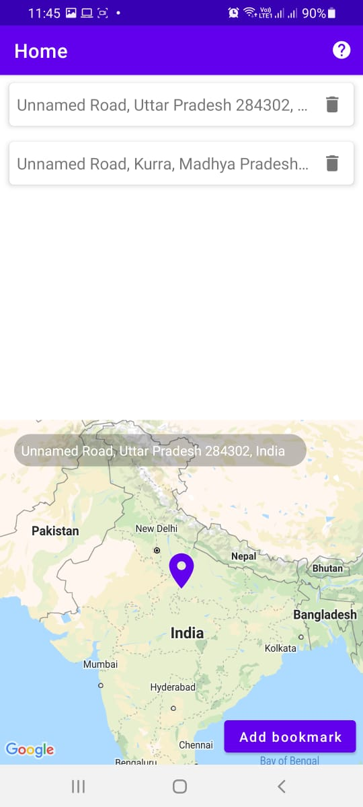
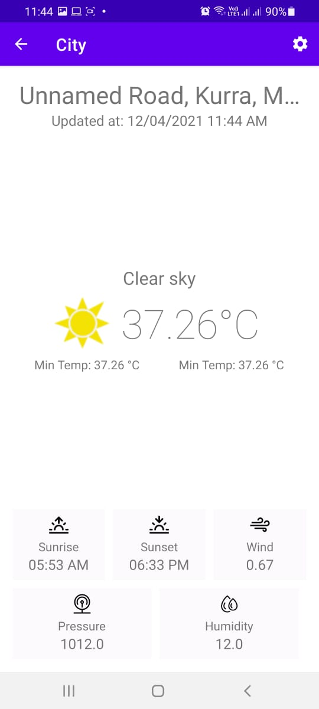
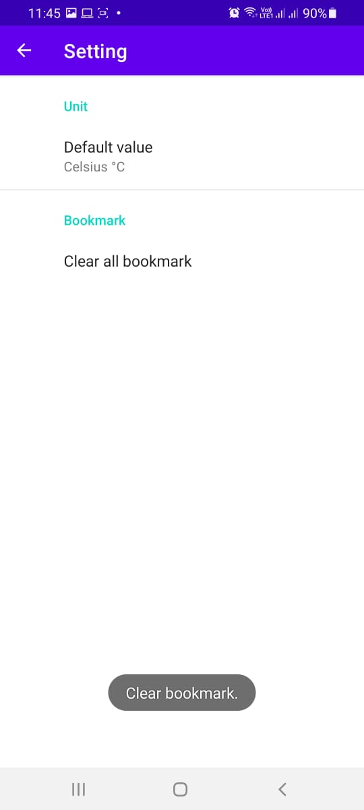

How to use this weather app?
Home Screen
Select the location from the google map below. Then click on the "Add Bookmark" button. A list showing cities will appear as per the latitude and longitude.

City Screen
Select the city on the "Home Screen" for which you want the weather information.It will navigate to weather screen.

Setting Screen
There is a 'Settings' icon on the weather screen through which units of temperature can be changed into Kelvin/Celsius/Fahrenheit. Also, all the bookmarked cities can be cleared by clicking on 'Clear bookmarked cities'
